Cuộc đấu trí của Thủ tướng Đan Mạch với ông Trump về Greenland
Bằng lập trường kiên định kết hợp ngoại giao khéo léo, Thủ tướng Frederiksen đến nay đã thành công trong nỗ lực ngăn Tổng thống Trump kiểm soát Greenland.
Cục CSGT: Những tình huống biển số phủ bùn đất không bị phạt
.png) Cục Cảnh sát giao thông cho biết biển số xe bị bùn đất che mờ do yếu tố khách quan trong quá trình lưu thông sẽ không bị xử phạt
Cục Cảnh sát giao thông cho biết biển số xe bị bùn đất che mờ do yếu tố khách quan trong quá trình lưu thông sẽ không bị xử phạt
Trung Quốc tuyên bố thuốc Covid-19 có thể 'ức chế virus Nipah hiệu quả'
Các nhà khoa học Viện Virus học Vũ Hán, Trung Quốc, công bố triển vọng dùng thuốc điều trị Covid-19 đường uống VV116 để ức chế virus Nipah.
33 giáo viên nâng, hạ điểm thi học kỳ của học sinh
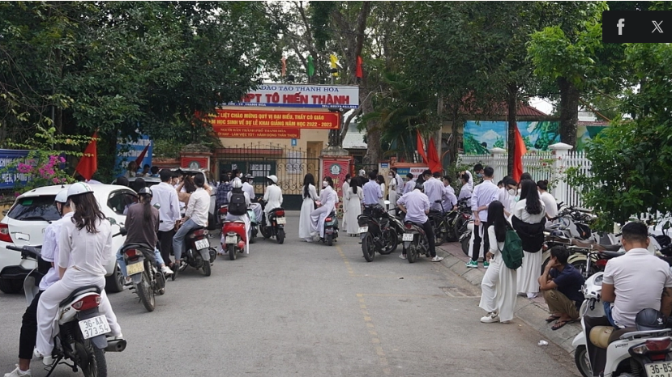
Thanh Hóa--Hàng trăm học sinh trường THPT Tô Hiến Thành bị nâng, hạ điểm, trường nói do "vô ý", nhầm lẫn, trục trặc mạngXuất hiện ảnh cận cảnh tên lửa đối không 'bí ẩn nhất' của Trung Quốc
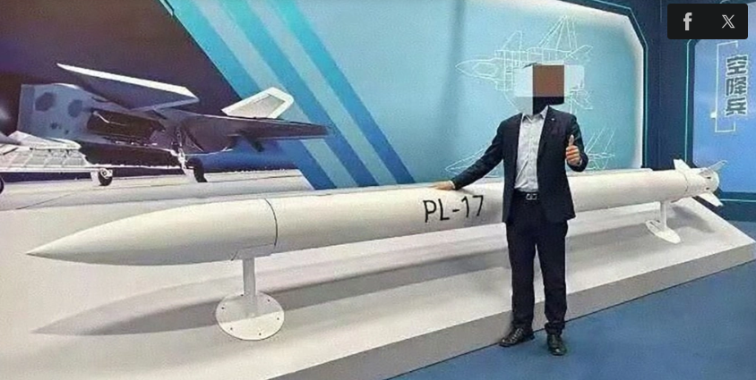
Ảnh mới công bố cho thấy một số chi tiết của PL-17, mẫu tên lửa tầm xa được mô tả là "bí ẩn nhất của Trung Quốc".Hơn 2.200 học sinh dừng ăn bán trú vì nghi thực phẩm bẩn
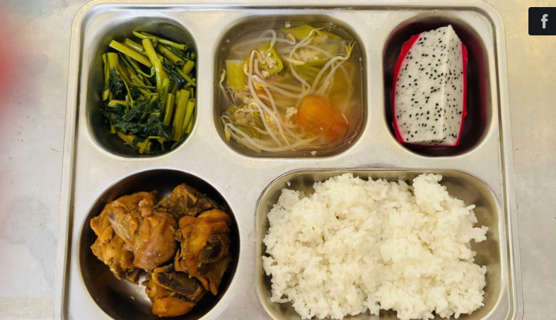
TP HCM--Khoảng 2.200 học sinh Tiểu học Tân Quy và Nguyễn Văn Hưởng phải tạm dừng ăn bán trú vì nghi nguồn thịt bẩn tuồn vào trườngBạn đọc Dân trí giúp chàng trai 19 tuổi trở về nhà, bắt đầu lại cuộc sống
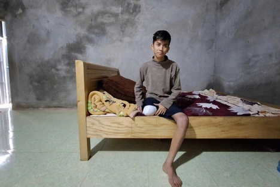
Sau biến cố nghiệt ngã, em Bùi Thanh Tường đã vượt qua nguy kịch, được xuất viện về nhà. Sự chung tay của bạn...Khoảnh khắc máy bay Mỹ mài bụng tóe lửa trên đường băng
Máy bay nghiên cứu của NASA đã phải hạ cánh bằng bụng sau khi gặp sự cố kỹ thuật ở Texas.
CLB CAHN thua đội bóng Malaysia, bị loại ở Cúp C1 Đông Nam Á
Trong một ngày mà tiền đạo Nguyễn Đình Bắc vắng mặt, CLB Công an Hà Nội (CAHN) bất ngờ nhận thất bại 0-2 trước...
Alex Honnold - 'Dị nhân' trên những bờ vực sinh tử
Sau kỳ tích leo núi El Capitan không dây bảo hiểm và giải Oscar cho phim tài liệu Free Solo, VĐV leo núi tự do Mỹ Alex Honnold tái định nghĩa giới hạn nỗi sợ con người bằng cách chinh phục thành công tòa nhà Taipei 101.
Vụ máy bay rơi ở Đắk Lắk: Biểu dương học sinh hỗ trợ phi công
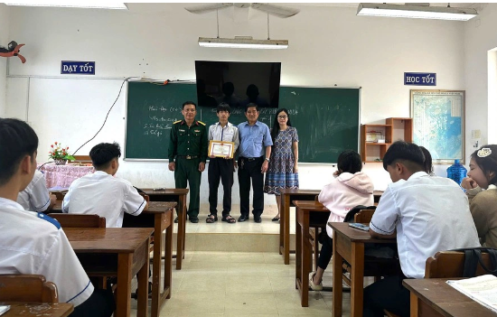
Sau hành động kịp thời giúp đỡ phi công trong vụ máy bay rơi ở Đắk Lắk, học sinh lớp 11 được chính quyền địa phương khen thưởng đột xuất, biểu dương...
Chuỗi trà và cà phê Phúc Long lãi sau thuế kỷ lục 195 tỷ đồng trong năm 2025 nhờ tăng mảng giao hàng, bán bánh và làm mới thương hiệu.
Phúc Long báo lãi kỷ lục từ khi về tay Masan
F88 lãi gần 1.000 tỷ đồng
Năm 2025, F88 ghi nhận lợi nhuận trước thuế 907 tỷ đồng, mức cao nhất kể từ khi thành lập, gấp đôi năm trước và vượt 35% kế hoạch.
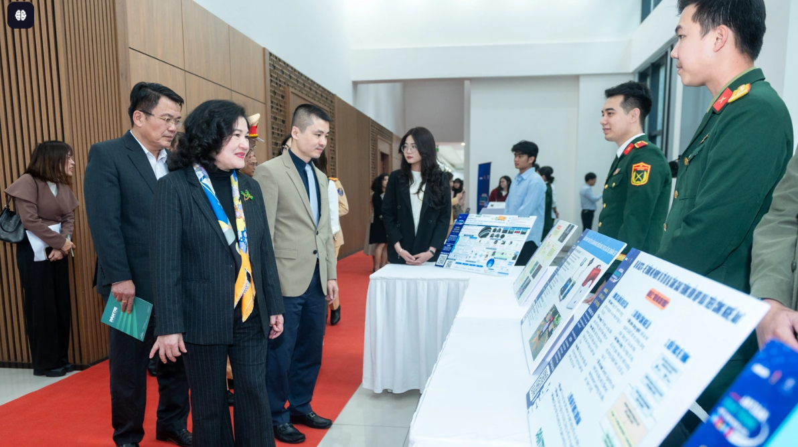
Loạt ý tưởng "đậm chất công nghệ" tại Sáng kiến An toàn giao thông 2025
Thiết bị cảnh báo điểm mù trên xe tải, mũ bảo hiểm chống điểm mù cho lái xe máy... là những sáng kiến đoạt..."Tôi kêu gọi mỗi người dân, mỗi gia đình hãy tiếp tục là một nhân tố tích cực, xây dựng văn hóa giao thông văn minh, an toàn", Phó Chánh văn phòng Ủy ban An toàn giao thông quốc gia kêu gọi.
Xử lý tài khoản ảo, bắt buộc xác thực danh tính với người dùng mạng xã hội Ban Bí thư yêu cầu xử lý triệt để tình trạng SIM "rác", tài khoản "ảo"
Tổng Bí thư dự Chương trình kỷ niệm 85 năm Ngày Bác Hồ về nước, Nhà nước dự Chương trình kỷ niệm 85 năm Ngày Bác Hồ về nước trực tiếp lãnh đạo Cách mạng Việt Nam
Hà Nội xử lý gần 1.700 học sinh vi phạm giao thông trong 1 tháng
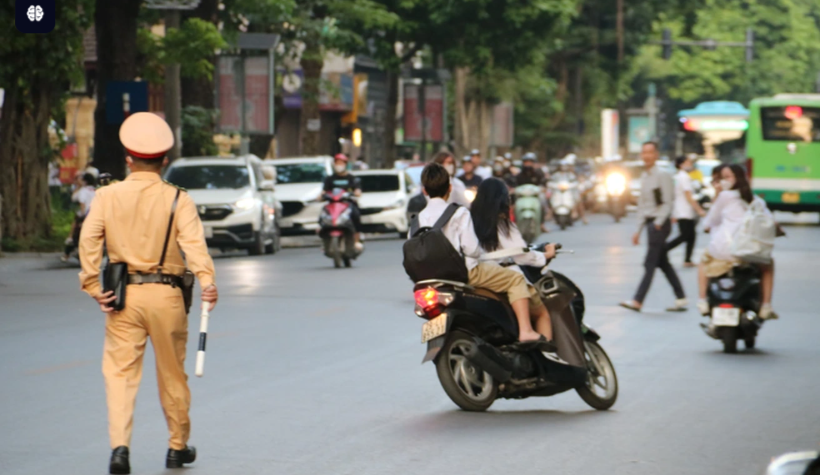
Nga có khả năng can thiệp để trả tự do cho Tổng thống Venezuela Maduro?
Chủ tịch Hiệp hội Luật sư Nga cho rằng Liên hợp quốc có thể đóng vai trò trong việc trả tự do cho Tổng nhân tố tích cực, xây dựng văn hóa giao thông văn minh, an toàn", Phó Chánh văn phòng Ủy ban An toàn giao thông quốc gia kêu gọinhân tố tích cực, xây dựng văn hóa giao thông văn minh, an toàn", Phó Chánh văn phòng Ủy ban.
Tổng thống Mỹ và Chủ tịch Trung Quốc mời nhau sang thăm trong năm nay Tổng thống Mỹ và Chủ tịch Trung Quốc mời nhau sang thăm trong năm nay
Iran tuyên bố không yêu cầu đàm phán với Mỹ Tổng thống Mỹ và Chủ tịch Trung Quốc mời nhau sang thăm trong năm nay
Tổng thống Trump ra tối hậu thư, Iran cảnh báo Mỹ “trả giá đắt” Tổng thống Mỹ và Chủ tịch Trung Quốc mời nhau sang thăm trong năm nay
CÔNG NGHỆ
AI & internet
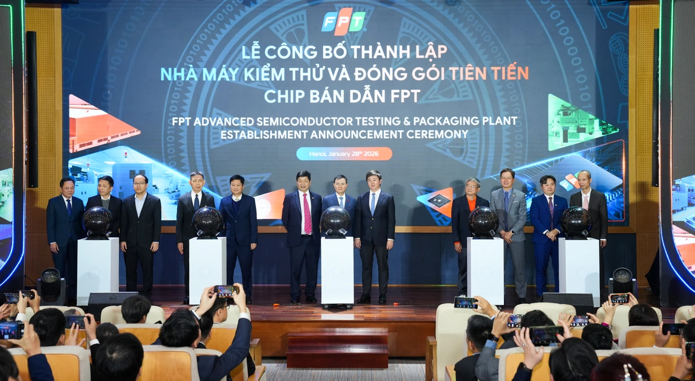
FPT thành lập nhà máy kiểm thử và đóng gói chip bán dẫn
Mẫu iPhone rẻ nhất tại Việt Nam tăng giá
iPhone 5s nhận bản cập nhật phần mềm sau 13 năm ra mắt
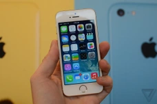
Mã độc âm thầm chụp ảnh nhạy cảm từ webcam máy tính để tống tiền người dùng
LAO ĐỘNG-VIỆC LÀM
Nhân Lực Mới - Làm Giàu - An Sinh
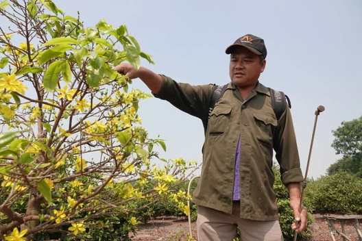
Ngóng mãi không khách, chủ vườn mai tiếc hùi hụi thời hoàng kim
Doanh nghiệp Việt trả lương cao để "săn" nhân sự biết tiếng Trung
Hơn 40% lao động đóng BHXH thấp hơn thu nhập thực tếTổng thống Mỹ và Chủ tịch Trung Quốc mời nhau
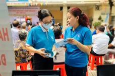
Trâu hồng lạ mắt mang lại cơ nghiệp sung túc cho chủ nuôi
PHÁP LUẬT
Hồ Sơ Vụ Án -Pháp Đình
Vụ tai nạn 4 người tử vong trên cao tốc: Bắt giam tài xế xe khách
17 lần nhận hối lộ hơn 10 tỷ đồng, cựu giám đốc bệnh viện chỉ nghĩ "giữ hộ"
Bắt được đối tượng trốn truy nã của cơ quan điều tra Bộ Quốc phòng
Khởi tố thêm một bị can liên quan vụ án trung tâm đăng kiểm xe cơ giới
TÌNH YÊU-GIỚI TÍNH
Tính Yêu- Gia Đình
Sốc khi người yêu của bố bằng tuổi con gái và nhiều điều ẩn ý
Chồng muốn tôi trở thành “người vợ hư” khi ở trên giường
Đang trăn trở việc mua quà Tết, hành động của sếp khiến tôi rơi nước mắt
Vừa yên ổn ở viện dưỡng lão, con gái vào thăm nói một câu khiến tôi mất ngủ